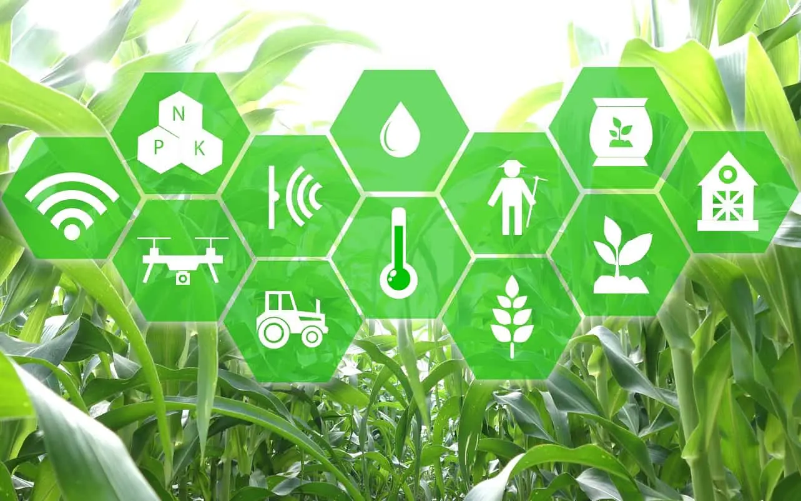
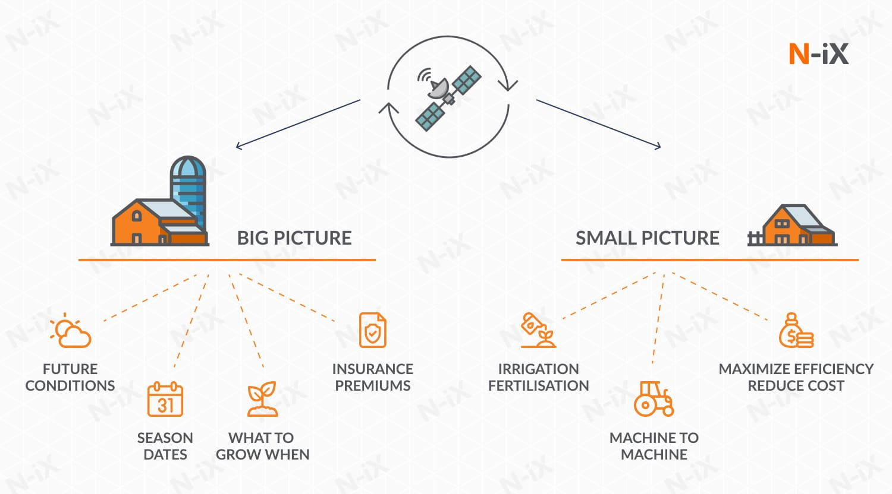
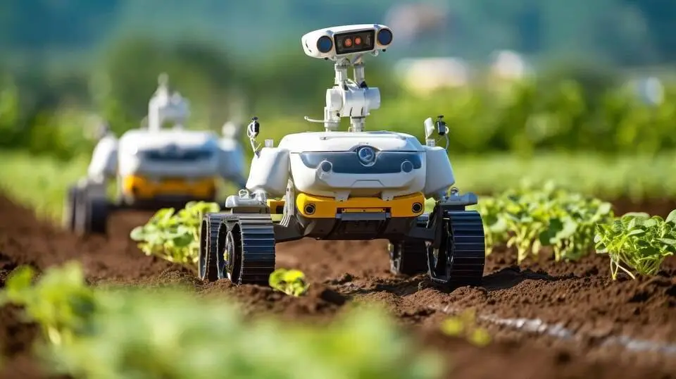
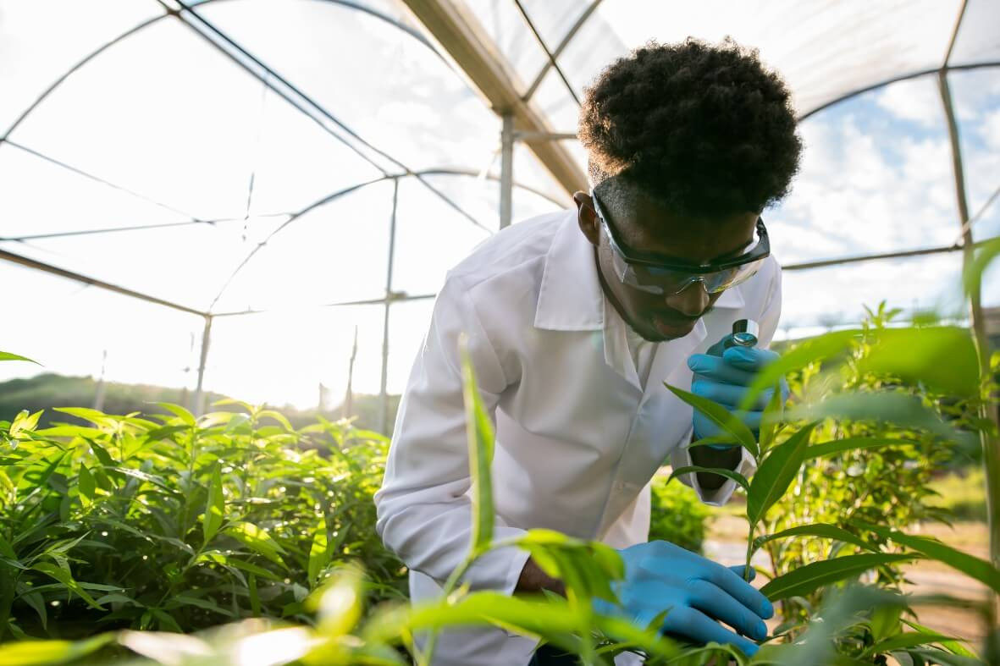
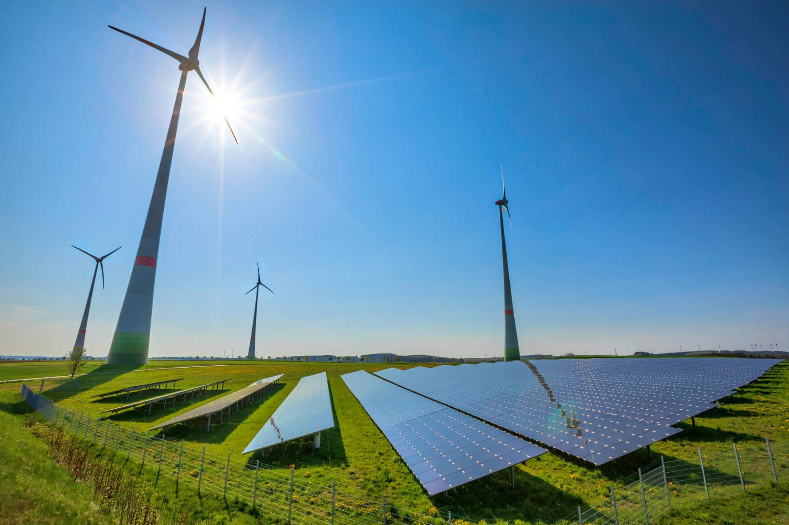

Agricultura de Precisão

A agricultura de precisão utiliza tecnologia avançada para monitorar e gerenciar variáveis agrícolas, como solo, clima e plantas, em um nível detalhado. Ferramentas como GPS, sensores de solo, imagens de satélite e drones são frequentemente usadas para otimizar o uso de recursos e aumentar a eficiência da produção agrícola.
Drones e Imagens Aéreas
Os drones são usados na agricultura para capturar imagens aéreas que ajudam na análise do campo, avaliação da saúde das culturas, e na identificação de problemas como pragas ou doenças. Essas imagens fornecem informações valiosas que podem ser usadas para melhorar a gestão das terras.
IoT na Agricultura
A Internet das Coisas (IoT) conecta dispositivos agrícolas a redes de dados, permitindo o monitoramento remoto e a automação de processos. Sensores de IoT podem rastrear condições climáticas, umidade do solo, níveis de nutrientes, entre outros, para melhorar a eficiência agrícola.
Big Data
O Big Data refere-se ao uso de grandes conjuntos de dados para tomar decisões informadas. Na agricultura, isso inclui análise de dados meteorológicos, informações de mercado, dados de solo e plantas, e muito mais. O uso de Big Data permite previsões mais precisas e decisões baseadas em dados.
Robótica na Agropecuária
Robôs agrícolas estão sendo usados para automatizar tarefas como plantio, colheita e controle de pragas. Essas máquinas são projetadas para realizar operações repetitivas com eficiência e precisão, reduzindo a necessidade de trabalho manual intensivo.
Biotecnologia na Agricultura
A biotecnologia na agricultura envolve o uso de processos biológicos para melhorar a qualidade e rendimento das culturas. Isso pode incluir o desenvolvimento de culturas geneticamente modificadas para resistência a pragas, doenças e condições climáticas extremas.
Irrigação Inteligente

A irrigação inteligente usa tecnologias como sensores de umidade do solo, sistemas de controle remoto e software de gestão de água para otimizar o uso da água nas plantações. Isso garante que as plantas recebam a quantidade exata de água necessária, economizando recursos e melhorando a eficiência.
Energias Renováveis na Agricultura
O uso de energias renováveis na agricultura inclui a implementação de painéis solares, turbinas eólicas e biogás para alimentar operações agrícolas. Isso não apenas reduz a dependência de combustíveis fósseis, mas também ajuda os agricultores a cortar custos e reduzir seu impacto ambiental.